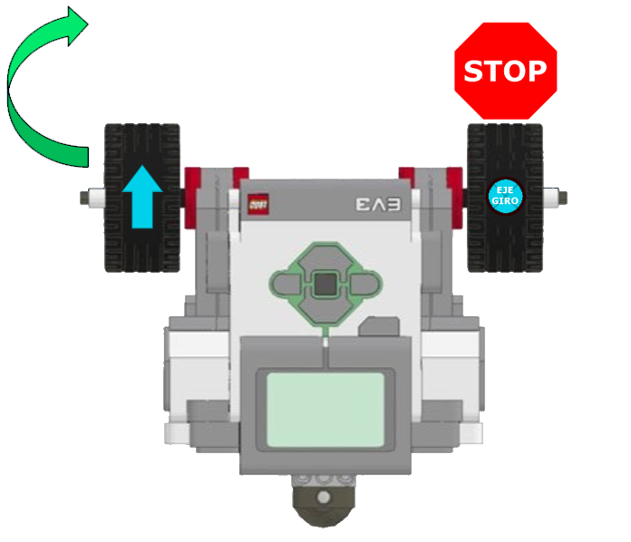
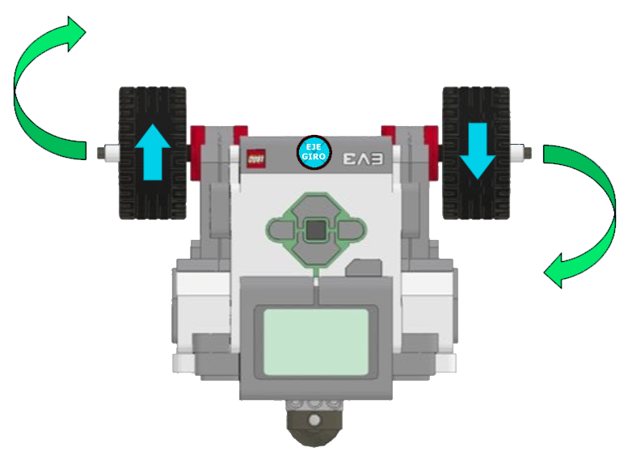
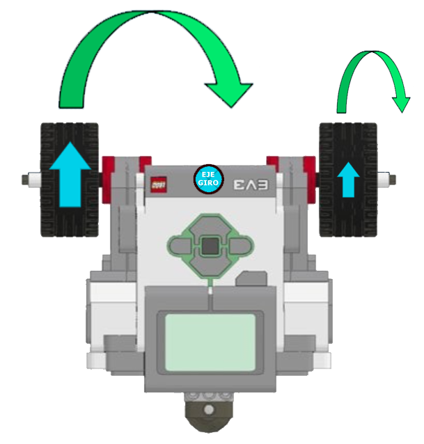

Para poder mover nuestro robot en linea recta bastaría con mover los dos motores al mismo tiempo y a la
misma velocidad, positiva o negativa. Pero para poder hacer giros con nuestra base tenemos que asignar
velocidades distintas a los motores.
Con la base construida se pueden hacer tres tipo sde giros distintos, cada uno de ellos lo podemos
utilizar según nuestras necesidades.
- Giro pibote: es el que realizamos parando una de las ruedas y avanzando con la otra. El eje de giro
se encontrará en el centro de la rueda que mantenemos parada.

- Giro sobre sí mismo: es que realizamos cuando movemos una de las ruedas con velocidad positiva y la otra rueda con la velocidad inversa, es decir, con la misma velocidad pero en negativo. El eje de giro se encontrará en el centro de nuestro robot.

- Giro en curva: es que realizamos cuando movemos una de las ruedas con mayor velocidad que la otra y siempre las dos o posittivas o negativas. El eje de giro dependerá de las velocidades que pongamos, pero siempre estará fuera de nuestro robot.
